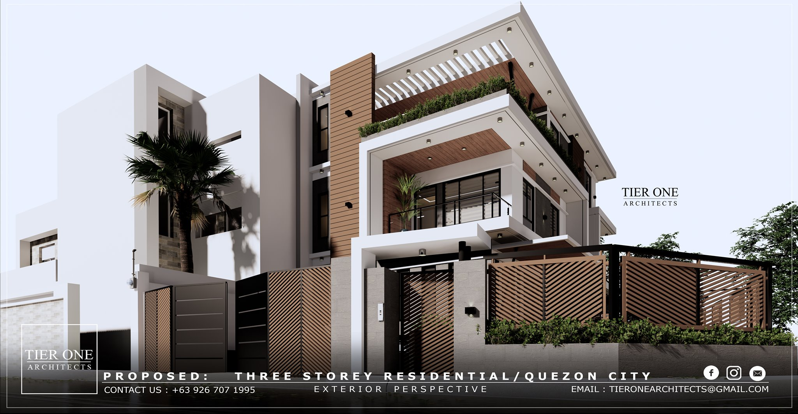

OUR VISION

MILI ARCHITECTURAL GROUP operates through a collaborative process with guaranteed designer-client involvement from the design phase up until turnover and beyond. The company ensures a design that’s as close as it can get to what the client envisions, made possible through the firm’s proficiency and professionalism. It is the company’s mission to provide solutions to this world’s modern day problems as well as to inspire everyone it reaches into taking the first step towards their dreams.
MILI ARCHITECTURAL GROUP strives to be one, if not the best architectural firms in the country and be globally
recognized for its integrity, dedication and responsible architectural practice as it extends its hands in helping the
firm’s valued clients to be on the top of their games. The firm aims to push boundaries as needed to aid in translating the
client’s dreams and conveying their stories.We operates through a collaborative process with guaranteed
designer-client involvement from the design phase up until turnover and beyond. The company ensures a design that’s as close
as it can get
to what the client envisions, made possible through the firm’s proficiency and professionalism. It is the company’s
mission to provide solutions to this world’s modern day problems as well as to inspire everyone it reaches into taking
the first step towards their dreams. We Architects strives to be one, if not the best architectural firms in the
country and be globally recognized for its integrity, dedication and responsible architectural practice as it extends its
hands in helping the firm’s valued clients to be on the top of their games. The firm aims to push boundaries as needed to
aid in translating the client’s dreams and conveying their stories.